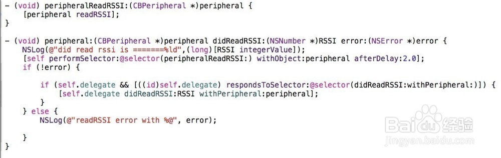
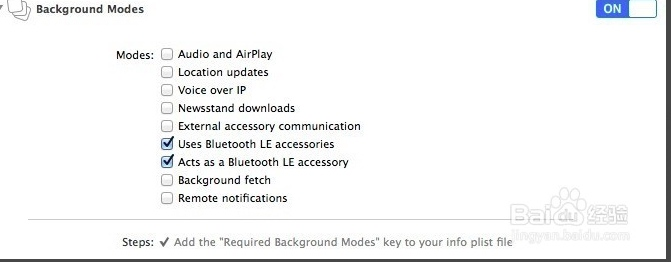

1. 获取蓝牙信号强度

2. 后台读取蓝牙信号强度
如果程序在后台还需要获取蓝牙蓝牙信号强度，那么肯定是需要支持后台的，要设置后台模式，设置use bluetooth LE accessories这样我们在后台就可以继续读取RSSI和回调了

在实际使用的过程当中，发现设置了后台模式后，读取RSSI的值持续时间不够长，读取一会就不继续读取了，后来各种测试发现，自己使用一个定时器持续读取蓝牙设备的battery，之所以读取battery，是因为设备的service中存在读取battery的serviceID。试验中，发现如果不定时读取该值，在后台运行的时候读取RSSI值就会中断
3.RSSI和距离关系
根据RSSI值，得到设备与手机之间的距离公式大概如下:
powe(10, (abs(rssi) - 59) / (10 * 2.0));
大概有这么一个关系，不是很准确。